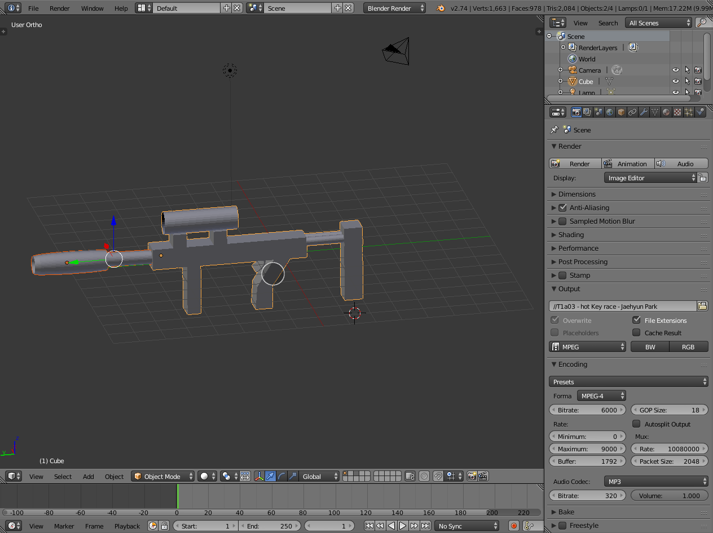
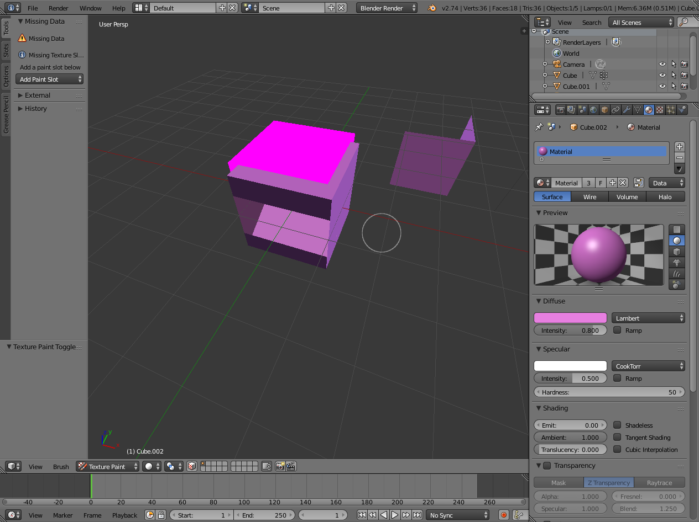
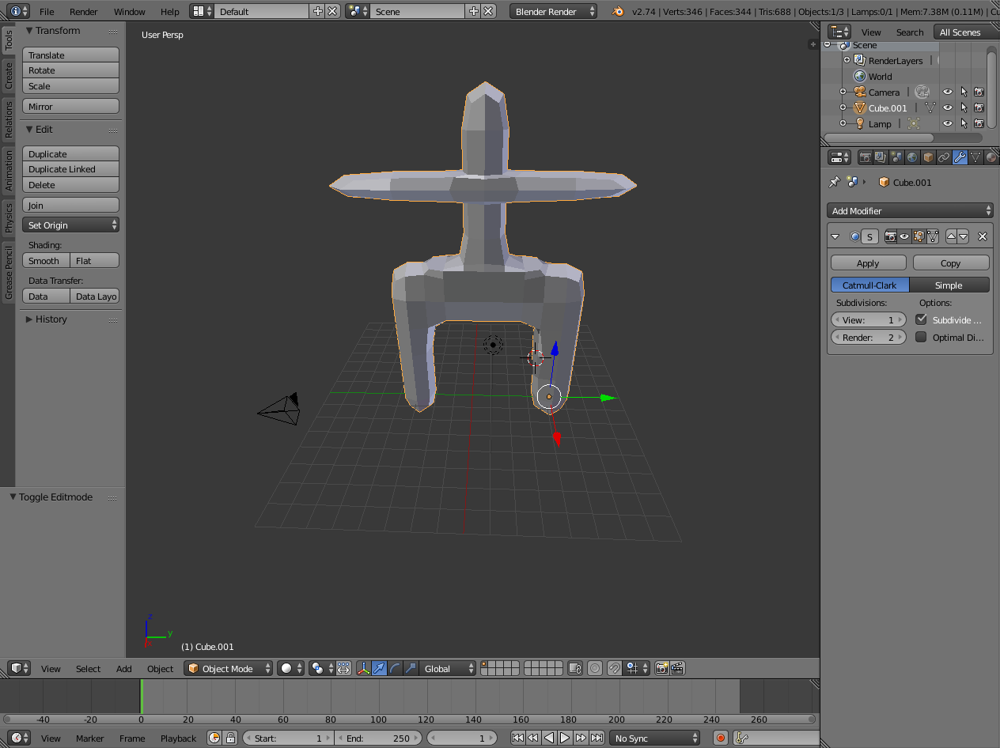
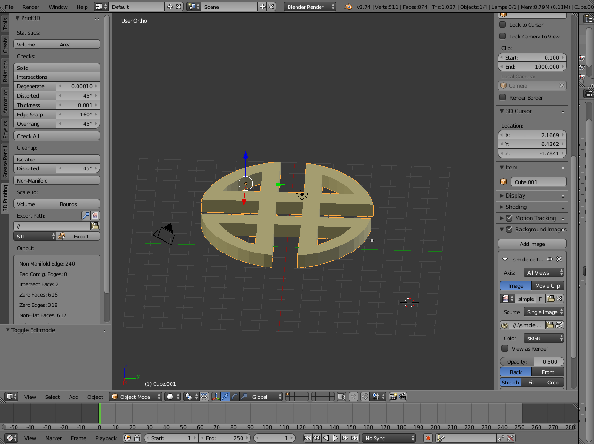

single web page
a01-html-Alexpark.html
These are the things I've made in last year on my 3D printing class.
- gun
- mouth
- shuck
- celtic
 
 
If you want to learn how to make these cool things and print them, start by watching this YouTube tutorial.
If you want to download blender, click on the "link label" below.
Link Label
| blender | blender |
| blender | blender |
| blender | blender |